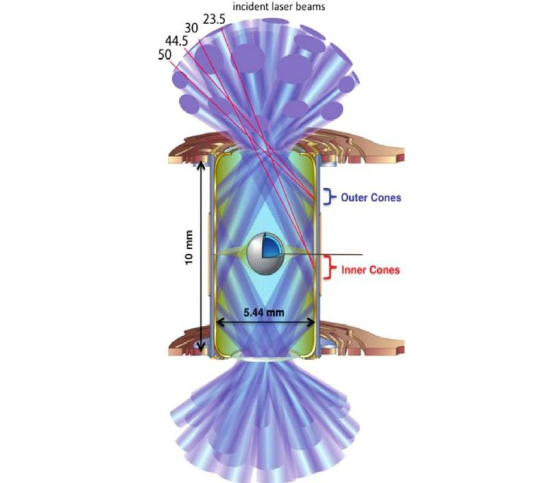

NIF (National Ignition Facility)
Под редакцией студента

Дорогие читатели, приготовьтесь к сенсации! Сегодня мы расскажем вам об историческом достижении, которое может навсегда изменить наш мир. В глубинах американской лаборатории, в NIF (от англ. “Национальный комплекс зажигания”), ученые впервые в истории смогли запустить термоядерную реакцию с чистым приростом энергии. Это событие, которое в течение десятилетий оставалось лишь в мечтах, теперь стало реальностью.
Чтобы понять важность этого прорыва, давайте вспомним о звездах. Именно там, в недрах Солнца и других светил, происходит термоядерный синтез – процесс слияния атомных ядер, который выделяет огромное количество энергии. Ученые давно мечтали научиться контролировать этот процесс на Земле, чтобы получить чистый и неисчерпаемый источник энергии. Но до сих пор все попытки оказывались неудачными, поскольку для запуска реакции требовалось больше энергии, чем выделялось в результате.
Национальный комплекс зажигания (NIF) – это уникальная установка, которая должна помочь нам покорить этот "солнечный" процесс. Он представляет собой огромный комплекс, где 192 мощнейших лазера направляются на крошечную капсулу с топливом. Представьте себе, как 192 луча света, собранные в одну точку, создают условия, как в центре звезды!
Эти лазеры, как мощнейшие прожекторы, фокусируются на капсуле диаметром всего 2 миллиметра, которая заполнена специальным топливом - изотопами водорода дейтерием и тритием. Этот мощный импульс сжимает и разогревает топливо до невероятных температур и давления, вызывая термоядерную реакцию. И вот тут происходит чудо: если реакция запущена, то она поддерживает сама себя, высвобождая огромное количество энергии.
Это событие – не просто научный эксперимент, это шаг к будущему, где энергия будет доступна всем и каждому. Контролируемый термоядерный синтез обещает нам:
- Неисчерпаемую энергию: Водорода на Земле много, и мы больше не будем зависеть от нефти и газа.
- Чистую энергию: Без выбросов парниковых газов и радиоактивных отходов.
- Энергетическую независимость: Все страны смогут обеспечивать себя энергией самостоятельно.
Конечно, не стоит думать, что завтра у каждого из нас в доме будет термоядерный реактор. NIF – это пока что экспериментальная установка, а не прототип электростанции. Ученым предстоит еще долгий путь:
- Нужно научиться повторять реакцию "зажигания" стабильно
- Нужно создать технологии, которые будут более эффективными и дешевыми
- Нужно разработать материалы и оборудование для работы в экстремальных условиях
Но, несмотря на все сложности, прорыв на NIF дает нам огромную надежду. Это доказывает, что человечество может решать самые сложные задачи. Возможно, совсем скоро мы будем жить в мире, где энергия будет не только доступной, но и чистой. Это та мечта, к которой нужно стремиться